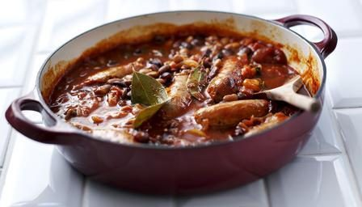

Sausage Casserole (Hairy Bikers)

Ingredients
Method
- Heat 1 tbsp of the sunflower oil in a large non-stick frying pan and fry the 12 sausages gently for 10 minutes, turning every now and then until nicely browned all over. Transfer to a large saucepan or flameproof casserole dish and set aside.
- Fry the 6 rashers of bacon in the frying pan until they begin to brown and crisp, then add to the sausages.
- Place the 2 onions in the frying pan and fry over a medium heat for five minutes until they start to soften, stirring often. You should have enough fat in the pan, but if not, add a little more oil.
- Add the 2 garlic cloves and cook for 2–3 minutes more until the onions turn pale golden-brown, stirring frequently.
- Sprinkle over the ½–1 tsp chilli powder or smoked paprika and cook together for a few seconds longer.
- Stir in the 400g chopped tomatoes, 300ml chicken stock, 2 tbsp tomato purée, 1 tbsp Worcestershire sauce, 1 tbsp muscovado sugar and 1 tsp dried mixed herbs.
- Pour over the 100ml wine, or some water if you're not using wine, and bring to a simmer.
- Tip carefully into the pan with the sausages and bacon and return to a simmer, then reduce the heat, cover loosely with a lid and leave to simmer very gently for 20 minutes, stirring from time to time.
- Drain the 400g butter beans and rinse them in a sieve under cold running water. Stir into the casserole and continue to cook for 10 minutes, stirring occasionally, until the sauce is thick.
- Season to taste with salt and freshly ground black pepper and serve with rice or slices of rustic bread.